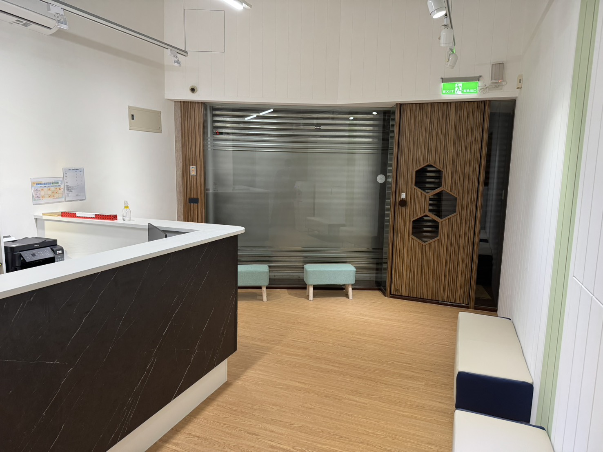
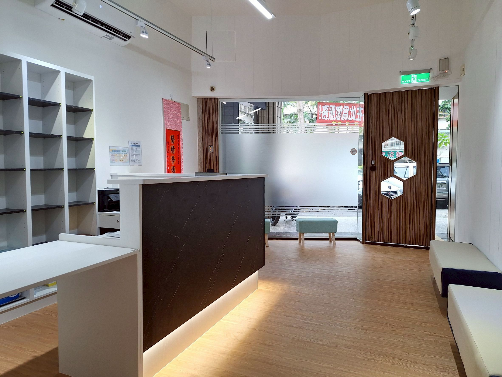
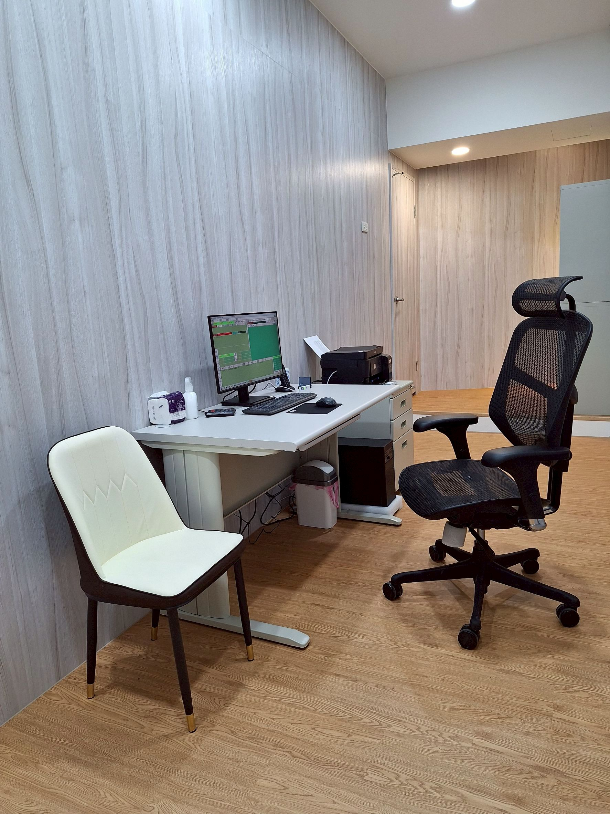
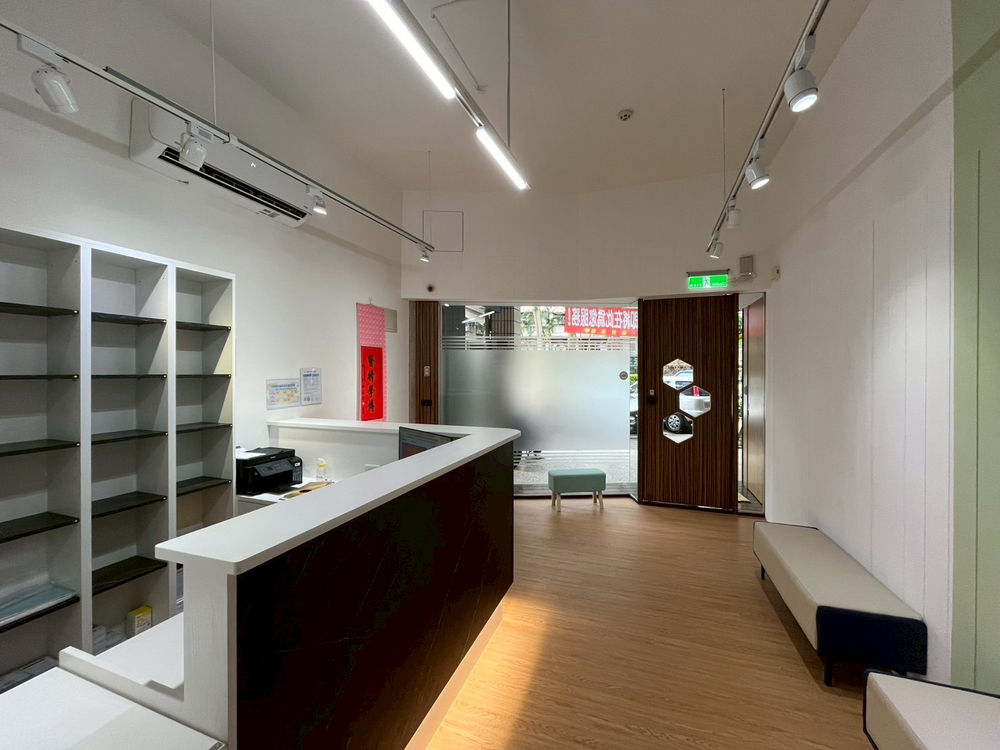

舒適放鬆的空間
溫馨、隱密、專業，讓您卸下心防的療癒場域





Chen-Jee Hong, M.D.
擁有超過30年的臨床經驗，前臺北榮總心身醫學科主任。專精於失眠、焦慮、憂鬱及精神藥物基因檢測，致力於透過「精準醫療」減少試藥痛苦，協助病患改善生活品質。
溫馨、隱密、專業，讓您卸下心防的療癒場域

週六採隔週看診制，來診前請先確認。
週二下午院長於臺北榮總看診。
舒眠身心醫學診所
地址 臺北市北投區自強街141巷17號

從明德站或石牌站步行約 5-7 分鐘 (鄰近自強市場)